Teach AI agents to manage context with Elastic Agent Builder
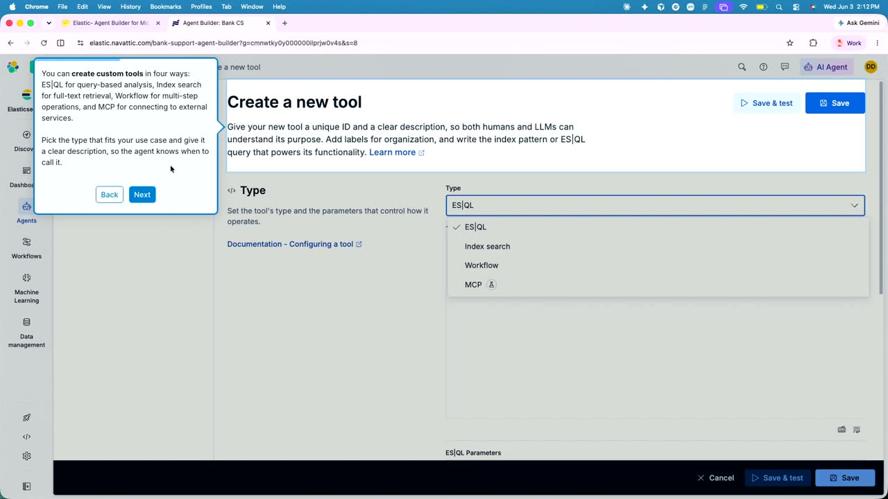
Official description
Solve AI context limits by enabling agents to manage their own memory. Learn how to prevent bloated prompts and context drift during long tasks, reduce input token usage while ensuring enterprise data governance and scalability. Walk away with next steps for deploying the dynamically loaded skills, conversation context store, selective compaction, and secure external data connectors from Elasticsearch 9.4's Agent Builder in the Microsoft ecosystem. Seating for this session is first-come, first-served. Add it to your schedule to plan your day and arrive early to secure a spot.
Summary
Overview
This session presents Elastic's Agent Builder, introduced in Elasticsearch 9.4, as a way for AI agents to manage their own context and bridge data silos across enterprise systems. Microsoft and Elastic representatives demonstrate how the tool runs natively in Azure, reduces token usage, and unifies data from sources like Elasticsearch, SharePoint, GitHub, and Slack into a single conversational interface.
Key announcements
- Elastic Agent Builder available on Azure — The Agent Builder, along with Elastic's hosted and serverless cloud offerings, runs in Azure across roughly 15 regions with more being added.
- Context engine for token-optimized retrieval (00:08:21m05s
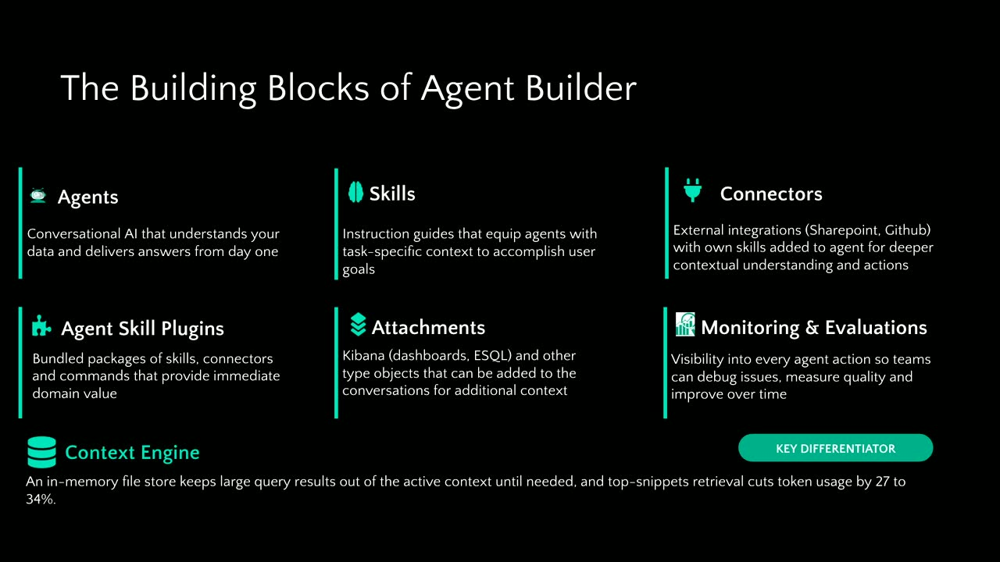
m10s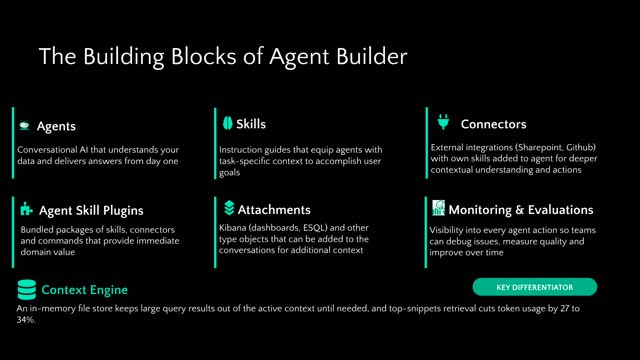
p05sp10s) — Elastic's context engine maps and defines data so it need not be recomputed, reducing token usage by roughly 20 to 34%. - Microsoft Foundry LLM reuse (00:03:11m05s
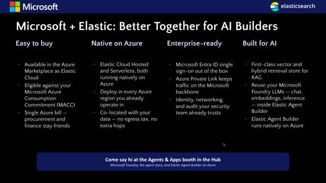
m10s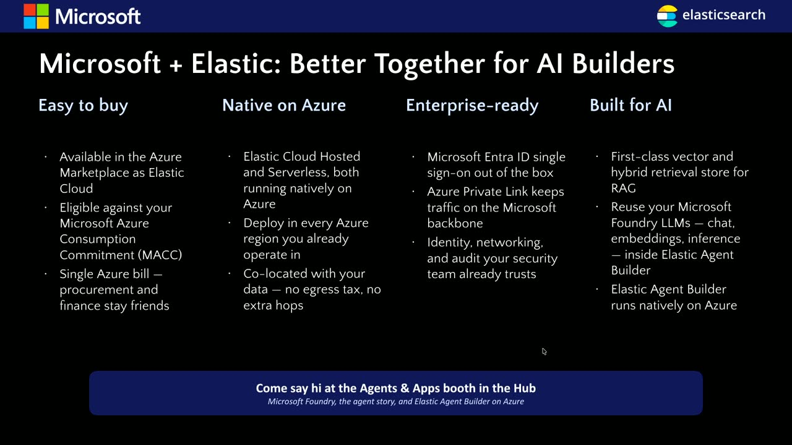
p05sp10s) — Agents in Elastic can be powered by Microsoft Foundry models, including Anthropic and OpenAI [inferred] models, via existing MACC agreements and PTUs. - Custom skills, tools, and connectors — Users can build domain-specific skills, create custom tools via the ES|QL query language, indexes, workflows, or MCP, and connect external systems through Federated search connectors.
- Elastic credits offer — Up to $1,000 in Elastic credits are available at the Elastic booth.
{kind=link}
{kind=link}
{kind=link}
{kind=link}
{kind=link}
{kind=link}
{kind=link}
{kind=link}
Topics covered
- The context gap created by siloed data across disparate enterprise systems
- Procurement of Elastic through Azure commitment dollars (MACC), Elastic Cloud, and the Microsoft Marketplace for a single Azure bill
- Enterprise integration: Microsoft Entra ID sign-in, private link connectivity, V-net integration, and compliance requirements
- Metadata-based classification of sensitive data (e.g. recognizing personal information fields) to govern agent responses
- Transparent agent reasoning that exposes which tools and skills were called, removing black-box behavior
- AI-generated summaries and saveable dashboards from agent queries
- Skills as building blocks that keep agents in a "swim lane" with specific instructions and associated tools
- Federated search connectors for SharePoint, SharePoint Server, Slack, and GitHub
- Human-in-the-loop approval for risky write operations (e.g. posting to a Slack channel)
- A bank customer-support demo unifying case data, policy documents, and engineering issues
Notable quotes
"What we are trying to do in Elastic is bridge that context gap by not just bringing in data into Elastic, but also creating the data that sits outside Elastic in these different systems." — Deepti Dheer
"That removes that black box tendency that some agents have and really gives you a transparent reasoning throughout the sessions when you're running these agents." — Deepti Dheer
"I can't think of a better partner for that partnership than Elastic." — Mike Richter
Products and tools mentioned
- Elastic Agent Builder
- Elasticsearch 9.4
- Elastic Cloud (hosted and serverless)
- Microsoft Azure
- Microsoft Foundry
- Microsoft Copilot Studio
- Microsoft Entra ID
- Microsoft Marketplace
- ES|QL (Elasticsearch query language)
- MCP (Model Context Protocol)
- SharePoint / SharePoint Server
- Slack
- GitHub
- Microsoft Teams
- Salesforce
Speakers featured
- Mike Richter — Principal Partner Solution Architect, Microsoft
- Deepti Dheer — Product Manager for Elastic, focused on Agent Builder
Follow-up resources
- Apps and agents booths ("yellow booths") staffed by Mike Richter after the session
- Elastic booth offering up to $1,000 in Elastic credits
Frames
{kind=link}
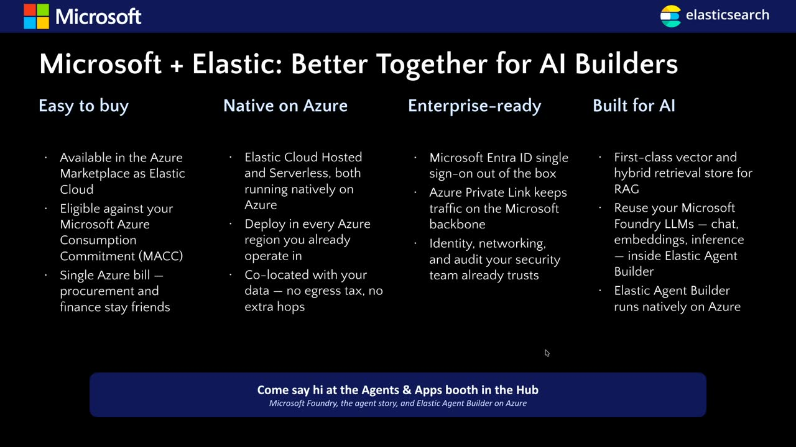
{kind=link}
{kind=link}
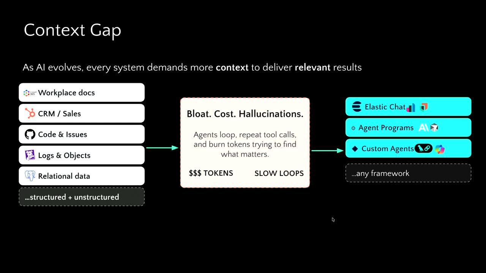
{kind=link}
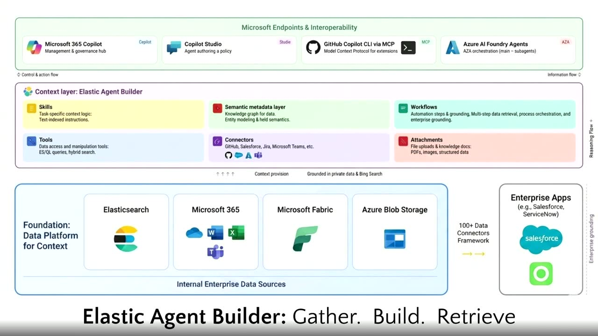
{kind=link}
{kind=link}
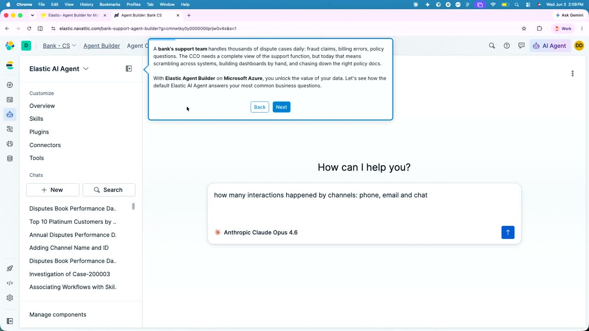
{kind=link}
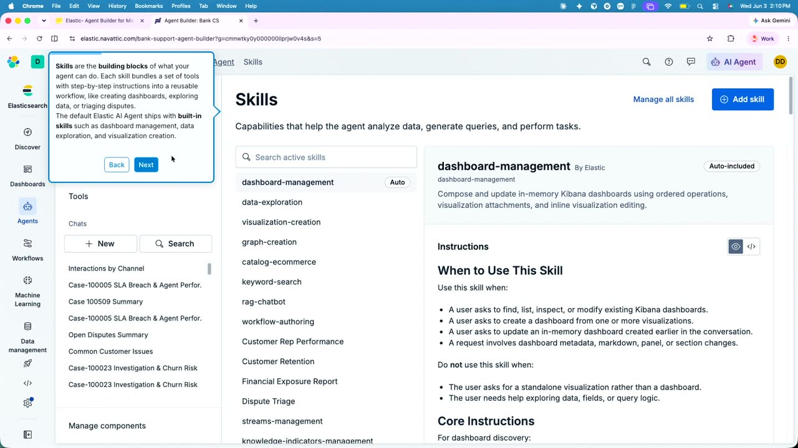
{kind=link}
{kind=link}
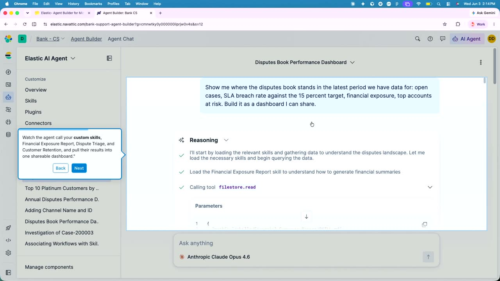
{kind=link}
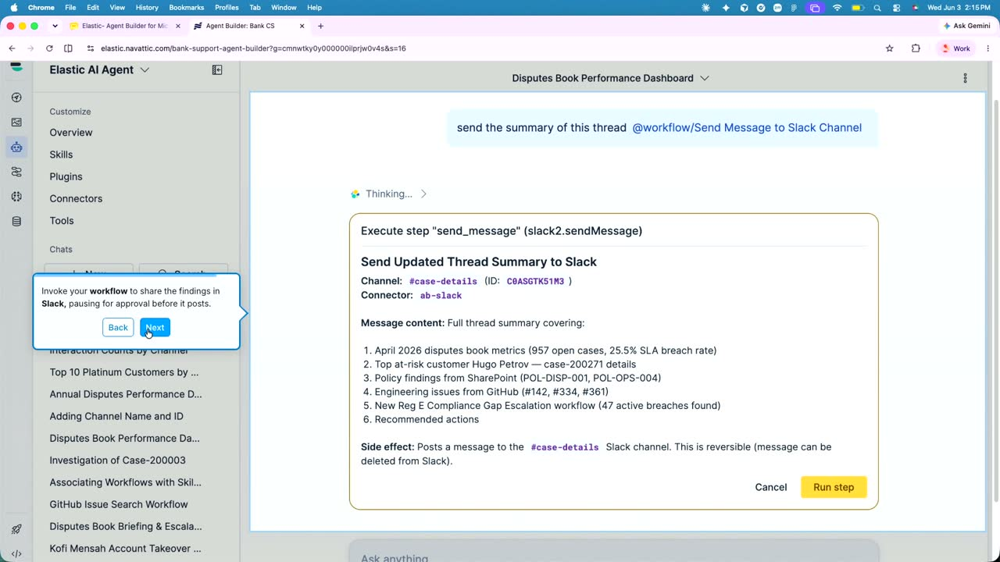


{kind=link}
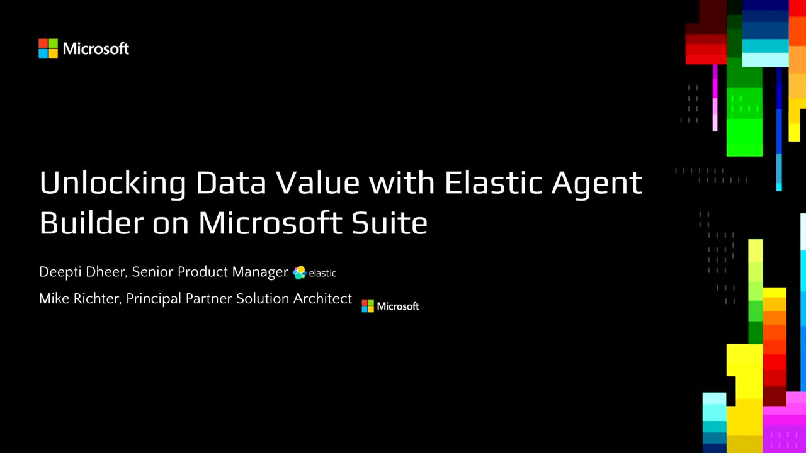

References
Transcript
Show / hide transcript (19,664 chars)
[00:00:00] All right. [00:00:01] Welcome everyone. [00:00:02] My name is Mike Richter. [00:00:04] I'm a Principal Partner Solution Architect at Microsoft and we [00:00:09] have. [00:00:10] Yes, Deepti. [00:00:11] Hi, everyone. [00:00:12] I'm, I'm Deepti here. [00:00:13] The product manager for Elastic primarily focused on agent Builder. [00:00:18] Over to you. [00:00:20] Cool. [00:00:20] So today we're going to talk to you about Elastic [00:00:23] running in Azure, and I'm just going to take a [00:00:26] few minutes talking about the great partnership between Microsoft and [00:00:30] Elastic. [00:00:33] So my mission as a partner solution architect is to [00:00:36] help our partners build and sell solutions on Azure. [00:00:40] And I can't think of a better partner for that [00:00:43] partnership than Elastic. [00:00:45] So can you show me? [00:00:48] Oops, sorry. [00:00:48] OK. [00:00:53] So I just want to talk about the partnership and, [00:00:56] and what it means for our mutual customers. [00:00:59] So the important thing to understand is that it's very [00:01:03] easy to buy Elastic on Azure, right? [00:01:06] It's available in, I think about 15 different Azure regions [00:01:10] right now and they're adding more of those regions. [00:01:14] If you are a Microsoft customer and you have Azure [00:01:17] commitment dollars, you have a Mac agreement. [00:01:21] If you work for a big company, you probably have [00:01:23] one. [00:01:23] If you're not aware, you can use those dollars, those [00:01:26] commitment dollars for Azure to purchase Elastic. [00:01:30] And you could do that through Elastic's cloud offering or [00:01:33] through the Microsoft Marketplace. [00:01:36] So that gives you one single Azure bill. [00:01:38] So it makes procurement of Elastic very simple for our [00:01:43] enterprise customers. [00:01:46] The Elastic Cloud offering, they have their hosted offering and [00:01:50] their serverless offering now available on Azure. [00:01:53] They are, like I said, 15 different regions all over [00:01:56] the world and adding more. [00:01:58] And so that means if you've got your Azure workloads [00:02:02] running in East US or one of the supported regions, [00:02:05] you can talk to Elastic. [00:02:07] No egress costs, no latency, no additional latency going to [00:02:12] another region. [00:02:14] The integration with with Elastic is enterprise ready, right? [00:02:19] So you can use your enter ID you sign into [00:02:22] the Microsoft portal. [00:02:24] You can use that same identity to go into the [00:02:26] elastic portal to create your indexes to create your agents, [00:02:29] do everything you need to do inside of Elastic. [00:02:33] You can talk to Elastic their managed service over private [00:02:37] links. [00:02:37] So Elastic essentially is part of your V net in [00:02:40] Azure. [00:02:41] So for our customers who have those compliance requirements, they [00:02:45] need to make sure that they talk to the data [00:02:47] sources privately. [00:02:49] All that works even though it's running in either Elastic's [00:02:52] cloud or running through the marketplace. [00:02:55] That is all happening for you. [00:03:00] And then as we all know, Elastic has first class [00:03:03] vector support right there. [00:03:05] Solution is really built for those RAG and Agentic applications [00:03:10] inside of Azure. [00:03:11] You can of course reuse your Microsoft Foundry LLMS, right? [00:03:17] So if you have that Mac agreement and you have [00:03:20] Ptus and you're using our models, Anthropic, Open Eye, all [00:03:24] that stuff through Foundry, those can power your agents inside [00:03:28] of Elastic as well. [00:03:29] And of course, the Elastic Agent builder, which DT is [00:03:33] going to be talking about is available running in Azure. [00:03:36] And I'll just wrap this little instruction to say that [00:03:40] I've done a lot with Elastic. [00:03:43] What DT is going to be showing you. [00:03:44] I have built and built demo applications. [00:03:47] So if you want to learn more, you can talk [00:03:49] to her. [00:03:50] You can come see me. [00:03:51] I'm going to be actually staffing the apps and agents, [00:03:55] the yellow booths right after this, right after this session. [00:03:59] So if you want to talk about apps and agents, [00:04:02] you want to talk about agent builder on Elastic, I'm [00:04:05] happy to show you what I built and talk to [00:04:07] you more about that. [00:04:09] So I'll hand it now to DT. [00:04:11] Thank you, Mike. [00:04:12] And one more thing that if you want free credits [00:04:15] or up to $1000 of credits of Elastic, please head [00:04:18] to our booth right here. [00:04:20] And you know, we we can help you with, you [00:04:23] know, any other questions on Elastic. [00:04:25] So just to, you know, summarize, yes, we are Microsoft, [00:04:28] but what does Elastic really do? [00:04:30] What are we doing in the world of AI, you [00:04:33] know, with Agent Builder? [00:04:38] So let me bring all of you back to the [00:04:40] to the problem first, which is, you know, we have [00:04:43] these desperate systems, which means we have data in those [00:04:47] systems and these state in these systems are just sitting [00:04:51] right there and in and having their siloed context. [00:04:54] Now what happens is when it comes to whether its [00:04:57] AI, whether its running your own business, leveraging AI, this [00:05:01] context, the siloed context really breaks the whole theme of [00:05:05] what's really needed to be done or what is needed [00:05:08] to be executed from an AI perspective, right. [00:05:11] So what we are trying to do in Elastic is [00:05:14] bridge that context gap by not just bringing in, you [00:05:17] know, data into Elastic, but also creating the data that [00:05:21] sits outside elastic in these different systems and give them [00:05:25] a good wrapper of context retrieval and give you a [00:05:28] response that is not just high quality, but then it's [00:05:31] also token optimized. [00:05:33] Now how do we do that? [00:05:38] So this this architecture, you know, in a nutshell, you [00:05:43] know, shares our approach to solving the context gap, which [00:05:47] is gather the if you look at the lowest tier, [00:05:51] you gather your information or context from these different sources. [00:05:56] That means whether your data isn't elastic or outside elastic [00:06:00] in the different ecosystems of Microsoft, we build your own [00:06:04] agents, your build your own capabilities around skills and, you [00:06:08] know, connectors. [00:06:09] And that's what pulls in all the, you know, the [00:06:12] context that is sitting in these systems. [00:06:15] And then we dispatch them to those entry points or [00:06:18] endpoints, which could be and your agent in Microsoft Foundry [00:06:23] or agent on your MCP Copilot Studio, or for that [00:06:26] matter, you know, any other, any other endpoint outside the [00:06:30] ecosystem of Microsoft. [00:06:35] So what are really those building blocks? [00:06:38] When we say context engine, what does that context engine [00:06:42] really curtail? [00:06:43] So that so that comes to the building blocks that [00:06:46] we have. [00:06:47] So of course we have agents and skills that are [00:06:50] really building your or, you know, building on top of [00:06:53] your data connectors that are just just fetching the context [00:06:56] from these different systems. [00:06:58] And then we have plug insurance, which is, which can [00:07:01] be your, your domain specific skills and connectors that we [00:07:04] that really help gain us more, you know, domain level [00:07:07] knowledge and attachments that that could be dashboard attachments or [00:07:11] for that part, any file uploads that you have that [00:07:14] are needed to add context to your agent. [00:07:17] But what all brings together is our context engine. [00:07:20] And what context engine is really doing is really mapping [00:07:24] your data into or aligning each of the data that [00:07:27] is sitting in silos and setting up right definitions at, [00:07:31] you know, so that it does not have to churn [00:07:34] and compute it again and again to understand what does [00:07:37] that data even mean. [00:07:39] So if I take an example personal, you know, phone [00:07:42] number, e-mail, first name and last name, they technically can [00:07:47] constitute your personal information, correct? [00:07:50] Now Elastic understands or meta or meta sizes that as [00:07:54] personal information metadata. [00:07:57] And now tomorrow if you are retrieving Salesforce data that [00:08:00] has customer data and the same fields first name, last [00:08:03] name, e-mail, phone number, it understands that it is actually [00:08:06] taking in the personal information. [00:08:08] What ends up happening is now the behind the scenes, [00:08:11] our agent then understands that hey, this is personal information, [00:08:15] should I really dispatch as a part of the response. [00:08:18] So which is where it is fairly secure. [00:08:21] At the same time the compute or that understanding of [00:08:24] the data is quickened. [00:08:25] So we actually reduce the token usage from almost 2027 [00:08:29] to 34%. [00:08:32] Now we have heard you know all this, so let [00:08:35] me show you how does that work in real time. [00:08:46] So, so this this demo really shows that let's say [00:08:50] you are a bank customer support team and who has [00:08:54] some case data that is, you know, currently inelastic. [00:08:58] But at the same time, your data like policy documents [00:09:01] or engineering issues that are currently sitting in GitHub, which [00:09:05] are your different systems are you know, don't don't know [00:09:08] or don't communicate with each other. [00:09:10] Now let me show you how Elastic Agent Builder does [00:09:13] that for you. [00:09:14] And it is done in a super easy, conversational manner. [00:09:17] How so? [00:09:18] For example, let me start with the simplest question. [00:09:21] How many interactions happen by channel, phone, e-mail or chat? [00:09:26] Oops. [00:09:29] So the agent builder is computing the the response behind [00:09:33] the scenes and we are very fairly transparent with what [00:09:36] we are computing. [00:09:37] So it shows you what what all tool tools were [00:09:40] called or you know tomorrow, what skills or plug insurance [00:09:42] were called. [00:09:43] So that you have you as a developer have a [00:09:45] holistic understanding of what is going on with your agent. [00:09:48] That removes that black box tendency that some agents have [00:09:51] and really gives you a transparent reasoning throughout the sessions [00:09:55] when you're running these agents. [00:09:58] What's more is its not just running giving you reasoning, [00:10:02] it is also giving a very holistic response as well. [00:10:06] So in this case it needn't just be a summarize [00:10:10] summary of your an AI summary that is generated, but [00:10:14] it can also generate a dashboard for you that you [00:10:19] can actually save now. [00:10:21] And this is agent like basic in a nutshell. [00:10:24] Now what what we are powering our users is to [00:10:27] actually customize this agent for you. [00:10:29] So what you just saw was in bare minimum, what [00:10:32] the agent can do and what all you know what [00:10:35] was what all part that agent. [00:10:38] But again, we understand every business and every business unit [00:10:41] has a, you know, a specific need. [00:10:44] So now I'll show you how you can even customize [00:10:46] that agent. [00:10:48] And one of the ways to customize is not just [00:10:51] by giving custom instructions, but also skills. [00:10:55] Now skills to those who don't know they are just [00:10:58] the building blocks. [00:10:59] They really help you in keeping your agent in a [00:11:02] swim lane, which means that we you can give them [00:11:06] a specific set of instructions format that they can follow. [00:11:10] You can also associate the different tools that you need [00:11:13] as a part of that skill. [00:11:14] So elastic, we do provide, you know, a comprehensive set [00:11:18] of skills that you can just go use, but at [00:11:20] the same time, we understand again that it could be [00:11:23] the needs could be domain specific, it could be industry [00:11:27] specific. [00:11:28] So which is why we also power power you by [00:11:31] to, you know, create your own custom skill. [00:11:34] Now, in this example, I'm creating a financial exposure report [00:11:38] skill that is, you know, that is just generating a [00:11:41] financial summary on demand and you know it, it is [00:11:44] like I'm giving it holistic instructions. [00:11:46] And I'm also, you know, adding tools to the skill. [00:11:53] What's next? [00:11:54] Tools. [00:11:55] Tools are nothing but elves on the shelves. [00:11:56] They are the actual soldiers on the on the ground, [00:11:58] right? [00:11:59] So again, here we have we are providing A comprehensive [00:12:03] set of, you know, tools that you can just go [00:12:06] to use. [00:12:06] And again, they are, you know, they will be helping [00:12:10] in some in the most of your agent executions. [00:12:12] But we also understand you may need some specific tools [00:12:16] that you need for your business for which you can [00:12:19] actually create your own tool. [00:12:21] And there are multiple ways to do it. [00:12:22] One way is through the E SQL way, which is [00:12:25] our query language. [00:12:26] So you can create a tool using that query language. [00:12:29] You can index, you can create a tool with your [00:12:32] index workflows and even MCP. [00:12:35] The next example is actually showing you how to an [00:12:40] example of a tool that was created by an indexed [00:12:44] data. [00:12:45] So when I say indexed data, this data was inelastic [00:12:48] and all I did was create a tool to look [00:12:50] up that Financial Policy through by just indexing it. [00:12:57] Now we are and so, so right now what whatever [00:13:00] you're seeing is in the realms of elastic, the data [00:13:03] is inelastic and everything is inelastic. [00:13:06] But what about when we have connectors, so like SharePoint, [00:13:10] like SharePoint Server, Slack. [00:13:12] So this is where we get into the broader context, [00:13:16] breaking that context silo. [00:13:18] So this connector, so we have a good network of [00:13:21] connectors that are that primarily do Federated search, you know, [00:13:25] with different these systems and really retrieve the data that [00:13:28] is most important to you. [00:13:31] How? [00:13:33] Oops. [00:13:39] There's some, yeah. [00:13:44] So how does that all come together? [00:13:46] Let's see. [00:13:48] So if I have this complex query, it is asking [00:13:51] me is I'm asking the agent to create a dispute [00:13:54] book for all the dispute related customer issues that have [00:13:58] been raised in the in the past based on my [00:14:01] data. [00:14:01] It is actually doing what it is actually calling my [00:14:04] custom skill that I just created. [00:14:06] And at the same time it is giving me again [00:14:10] a super comprehensive response that I can literally use, you [00:14:15] know, and refer whenever I want. [00:14:18] What's more is that to that response, I can also [00:14:22] say, hey, can you retrieve a specific policy which is [00:14:26] currently located in a SharePoint document or a SharePoint folder [00:14:31] to and associate with that case with that specific case [00:14:35] ID And it is able to do that. [00:14:38] So here you can see the the relevant policy that [00:14:41] is relevant to that specific case. [00:14:43] And all of that is having in in the same [00:14:46] same location, same conversation without having to go out of [00:14:50] elastic. [00:14:51] What else? [00:14:52] What if I have engineering dependencies? [00:14:55] So for that we also have a GitHub connector. [00:14:57] All I'm doing is, hey, can you check if there [00:15:00] are any GitHub dependencies or open engineering issues that really [00:15:03] impacts the case resolution and which is what you know, [00:15:06] the based on the skill that I designed based on, [00:15:09] you know, the other tools that I designed, it is [00:15:12] giving me a rank of OK, some of the issues [00:15:14] that are directly impacting your case here. [00:15:17] What's more is that I want to say I like [00:15:22] the summary. [00:15:23] I want to send it to my, you know, stakeholders [00:15:26] over a Slack channel. [00:15:27] Now this could also be teams we have, we already [00:15:30] have that interview, but now specifically for Slack, I just [00:15:33] created a workflow to say, hey, please send this summary [00:15:36] to a specific Slack channel. [00:15:38] Now what it's doing is actually taking my approval to [00:15:41] make sure that I do want to take on the [00:15:43] step. [00:15:43] We understand that the right operations are fairly complex and [00:15:47] sometimes they can also be risky. [00:15:49] So we just want to make sure that you approve [00:15:52] to the to such writing actions and the next and [00:15:55] the result you have a comprehensive response of the comprehensive [00:16:00] summary of that same thread in your Slack channel that [00:16:03] is then shared across with your with your team. [00:16:07] So this is like one of the ways, or I [00:16:09] would say the simplistic way of how agent builder can [00:16:12] really minimize the context gap and at the same time [00:16:15] really deliver the value of the data that you know, [00:16:17] that are currently sitting in silos, bringing it together and [00:16:21] giving you a comprehensive prehensive, you know, responses that you [00:16:24] can then use and make really quick business decisions. [00:16:28] Thank you very much.